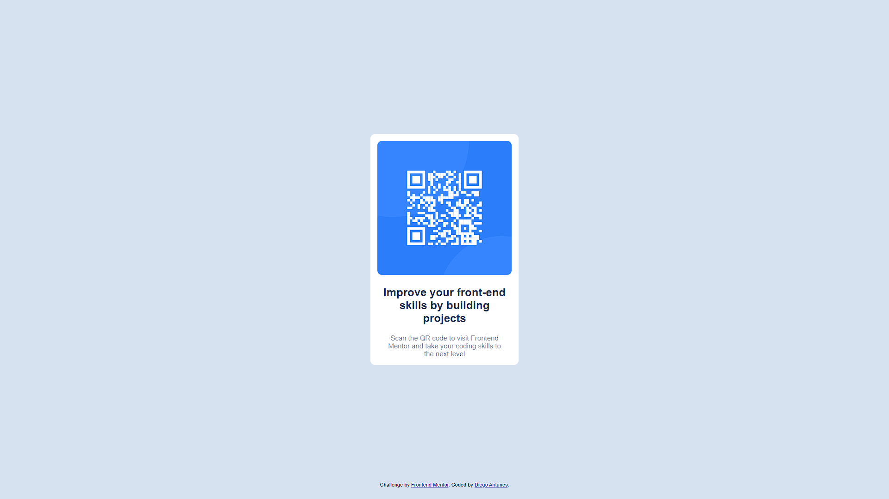

>> FRONTEND MENTOR
Projetos desenvolvidos a partir dos desafios fornecidos pela plataforma de aprendizado Frontend Mentor.
Nome do Projeto
Link
Repositório
Detalhes
Preview
QR Code
Tecnologias usadas: HTML, CSS, Javascript, Git.

Accordeon FAQ

>> JS 30
Criado por Wes Bros, o JS 30 é um conjunto de 30 desafios diários focados exclusivamente no uso de Javascript puro. O site fornece uma página já estruturada e estilizada, restando ao desenvolvedor a tarefa de implementar diferentes interatividades e funcionalidades dinâmicas usando somente Javascript.
Nome do Projeto
Link
Repositório
Detalhes
Preview